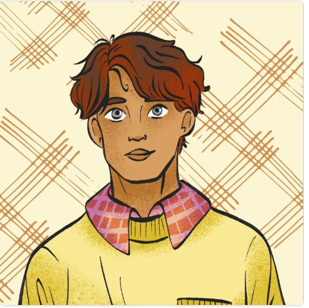

Rune Runnestø

Summary
I am a hardworking and dedicated individual with experience in data technology in general and web development in
particular.
Education
-
Master of Science in Data Technology
University of Oslo, 2006-2010
-
Bachelor of Science in Data Technology
University of Oslo, 1998-2002
-
High School Diploma
Oslo High School, 1994-1997
Work Experience
-
Customer Service
August 2020 - May 2021
-
Answered customer inquiries via phone and email
-
Resolved customer complaints and issues
-
Maintained customer records and updated account information
-
Administrative Assistant
June 2021 - October 2024
-
Assisted with sheduling and organizing meetings
-
Managed incoming and outgoing mail and correspondance
-
Prepared reports and presentations using Microsoft Office Suite
Skills
-
Customer Service
-
Database administration
-
Organizional skills
Awards and Certifications
-
Oracle Certified Professional, MySQL 5.6 Database Administrator
-
HTML certificate
-
CSS Course
-
JavaScript Course
Other